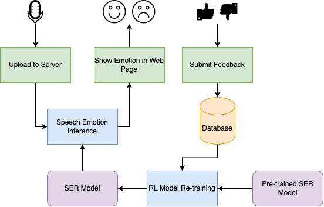

Zeta - Web
Automated speech emotion classification training portal
Experience Reinforcement Learning based Domain adaptation in action with two easy steps
Record two second audio segment
View results and give feedback

Record two second speech audio
Record
Avoid recording sensitive information in to the audio segment.
Record two second speech audio
Recording...
Avoid recording sensitive information in to the audio segment.
Upload the recorded Audio
Upload
Recorded Audio
Avoid recording sensitive information in to the audio segment.
Upload the recorded Audio
Uploading...
View Results and give feedback
Emotion of the recorded audio segment is identified as
Happy 😄
Give your feedback
Results of the supervised learning model
The supervised learning model identified the emotion of the audio segment as
Neutral 😐
˚